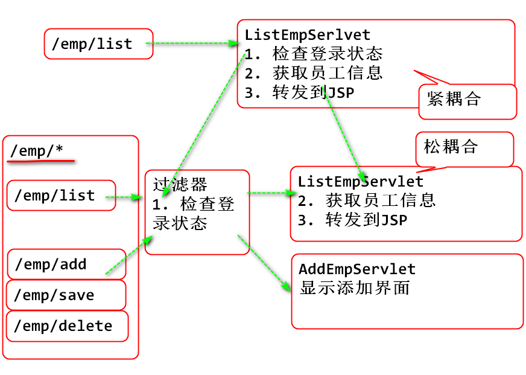
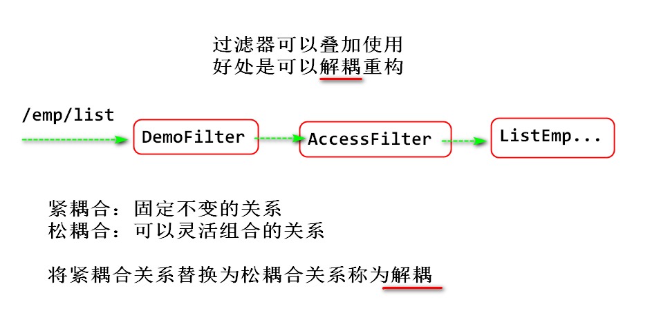
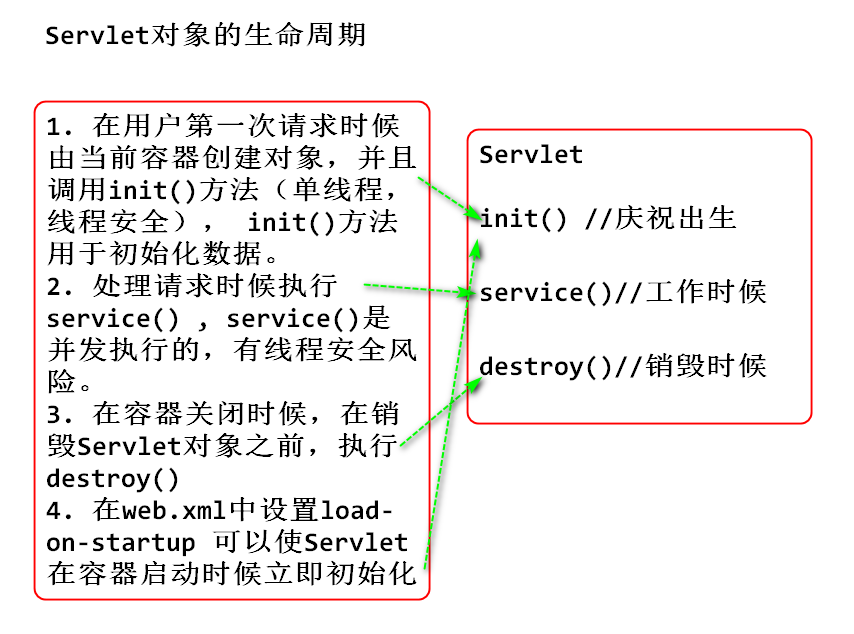
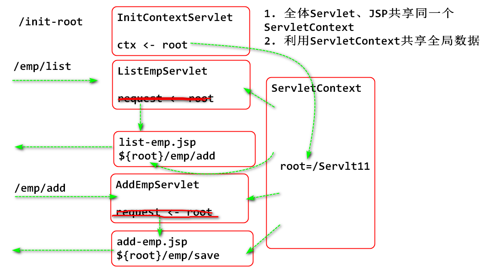
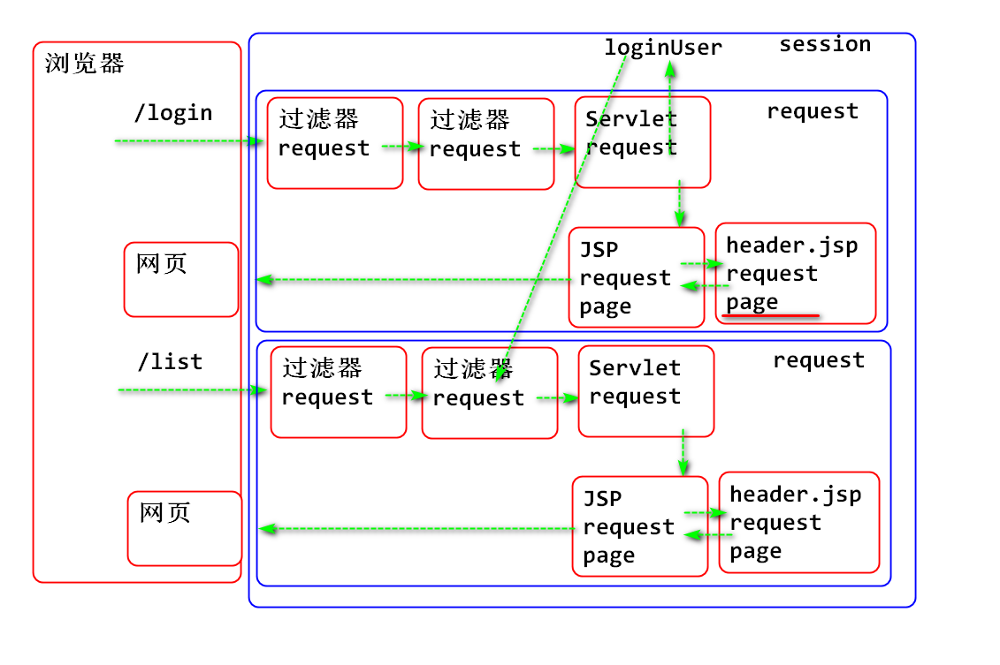

Cookie Session
Session超时: 默认30分钟会超时删除。 从最后一次访问开始超过30分钟销毁Session。 可以在 web.xml 中修改Session过期时间。
<session-config> <session-timeout>20</session-timeout> </session-config>
过滤器： 可以拦截任何Web请求，可以对Web请求添加过滤规则逻辑。
目标： 对于 /emp/* 等路径的请求进行拦截，如果登录了才能使用。
Servlet、Filter的路径匹配规则：
原理：

案例步骤：
添加过滤器检查权限
/**
* 访问控制过滤器：只有登录的用户才能通过访问
*/
public class AccessFilter implements Filter {
@Override
public void doFilter(
ServletRequest request,
ServletResponse response,
FilterChain chain)
throws IOException, ServletException {
//转换request和response对象的类型，这样可以
//使用更多的API方法
HttpServletRequest req=(HttpServletRequest)request;
HttpServletResponse res=(HttpServletResponse)response;
HttpSession session = req.getSession();
User loginUser =
(User)session.getAttribute("loginUser");
if(loginUser==null) {
System.out.println("没有登录，转到登录");
//没有登录，重定向到登录页面，不执行后续链节
String login=req.getContextPath()+
"/user/start-login";
res.sendRedirect(login);
return; //不执行后续链节
}
//执行后续链节，就是执行后续的Servlet
System.out.println("登录成功，继续执行");
chain.doFilter(req, res);
}
@Override
public void init(FilterConfig arg0) throws ServletException {
}
@Override
public void destroy() {
}
}
配置：
<filter>
<filter-name>acl</filter-name>
<filter-class>day11.AccessFilter</filter-class>
</filter>
<filter-mapping>
<filter-name>acl</filter-name>
<url-pattern>/emp/*</url-pattern>
</filter-mapping>
<filter-mapping>
<filter-name>acl</filter-name>
<url-pattern>/dept/*</url-pattern>
</filter-mapping>
<filter-mapping>
<filter-name>acl</filter-name>
<url-pattern>/photo/*</url-pattern>
</filter-mapping>
测试...
过滤器可以叠加使用，方便灵活的重构

<filter>
<filter-name>demo</filter-name>
<filter-class>day10.DemoFilter</filter-class>
</filter>
<filter-mapping>
<filter-name>demo</filter-name>
<url-pattern>/target</url-pattern>
</filter-mapping>
<filter-mapping>
<filter-name>demo</filter-name>
<url-pattern>/emp/*</url-pattern>
</filter-mapping>
ServletContext： Servlet上下文，也就是当前Servlet的运行环境,就代表当前的容器对象，ServletContext API方法提供了与当前容器有关的方法。
SertvletContext提供了数据共享功能，其共享范围是全部的Servlet和JSP
案例 获取当前服务器的版本信息：
public class ContextDemoServlet extends HttpServlet {
private static final long serialVersionUID = 1L;
/**
* 演示 ServletContext 的功能
* 请求URL /context-demo
*/
protected void doGet(
HttpServletRequest request,
HttpServletResponse response)
throws ServletException, IOException {
//1. 获得ServletContext: getServletContext()
//方法是在 HttpServlet类上定义，调用这个方法
//可以获得ServletContext对象， ServletContext对象
//是单例对象，任何方法得到的ServletContext对象
//都是同一个对象
ServletContext ctx = getServletContext();
// ServletContext 代表Servlet的工作环境，也就是
// 代表当前的Web Server, getServerInfo() 方法
// 可以获得当前服务器的 名称和版本
String str = ctx.getServerInfo();
System.out.println(str);
response.setContentType("text/html;charset=UTF-8");
response.getWriter().print("OK");
}
}
Servlet对象从创建到使用，以及最后销毁的过程
原理:

利用Servlet init方法解决ContextPath初始化问题：

创建Servlet
public class InitRootServlet extends HttpServlet {
private static final long serialVersionUID = 1L;
@Override
public void init() throws ServletException {
ServletContext ctx=getServletContext();
String contextPath = ctx.getContextPath();
//将ContextPath存储到ServletContext中
ctx.setAttribute("root", contextPath);
System.out.println("初始化了");
}
@Override
public void destroy() {
System.out.println("我还会回来的！");
}
/**
* 在 ServletContext中初始化 root 变量
* 请求URL： /init-root
*/
protected void doGet(
HttpServletRequest request,
HttpServletResponse response)
throws ServletException, IOException {
response.setContentType("text/html;charset=UTF-8");
response.getWriter().print("OK");
}
}
配置：
<servlet>
<description></description>
<display-name>InitRootServlet</display-name>
<servlet-name>InitRootServlet</servlet-name>
<servlet-class>day11.InitRootServlet</servlet-class>
<load-on-startup>1</load-on-startup>
</servlet>
<servlet-mapping>
<servlet-name>InitRootServlet</servlet-name>
<url-pattern>/init-root</url-pattern>
</servlet-mapping>
注意： 设置
<load-on-startup>1</load-on-startup>可以在Web容器启动时候执行Servlet init()方法。 实现容器启动时候初始化ContextPath。
删除所有Servlet中初始化 ContextPath 的代码。
JSP 也是Servlet，其生命周期类似
共享数据方法： setAttribute， getAttribute，removeAttribute
如上4种对象其共享数据范围不同。

使用建议：
EL表达式，会自动的按照由小到大搜索数据:
${root} 检索顺序
pageContext.getAttribute("root");
request.getAttribute("root");
session.getAttribute("root");
application.getAttribute("root");
利用session数据范围，在页面上显示登录用户信息：
更新header.jsp:
${loginUser.name}
什么是监听器： Java EE 设计了一系列回调函数接口，在Web服务器的特定工作节点时候，执行回调方法。 利用这些方法可以在服务器特定工作点插入功能。
特点工作点包含：
举个栗子：
利用监听器检测 ServletContext 对象何时创建，何时销毁：
使用监听器, ServletContextListener 监听器的使用。
监听器案例：
创建监听器对象:
public class ContextDemoListener
implements ServletContextListener{
// context 上下文， Initialized 初始化完成了
// 此方法会在 ServletContext对象初始化完成以后执行
@Override
public void contextInitialized(
ServletContextEvent e) {
System.out.println("初始化完成");
}
// Destroyed 销毁完成了
// 此方法会在ServletContext对象销毁完成以后执行
@Override
public void contextDestroyed(
ServletContextEvent e) {
System.out.println("销毁以后");
}
}
配置 web.xml
<listener>
<listener-class>day11.ContextDemoListener</listener-class>
</listener>
测试： 由于 ServletContext对象在容器启动时候创建，在容器关闭时候销毁，所以在容器启动时候和关闭时候能够看到打桩语句的输出。
ServletContextListener 可以用于初始化或者销毁全局资源
总之，Listener的使用非常灵活，需要根据情况适当使用。
案例：
创建Listener
/**
* 初始化和销毁应用程序的全局资源
* 1. ServletContext 创建时候 初始化 root=ContextPath
* 2. ServletContext 销毁时候 关闭数据库连接池
*/
public class ResourceInitDestroyListener
implements ServletContextListener {
public void contextInitialized(
ServletContextEvent e) {
ServletContext ctx = e.getServletContext();
String contextPath = ctx.getContextPath();
ctx.setAttribute("root", contextPath);
System.out.println("初始化了 root="+contextPath);
}
public void contextDestroyed(
ServletContextEvent e) {
//关闭数据库连接池
DBUtil.close();
System.out.println("关闭了数据库连接池！");
}
}
配置 web.xml
<listener>
<listener-class>day11.ResourceInitDestroyListener</listener-class>
</listener>